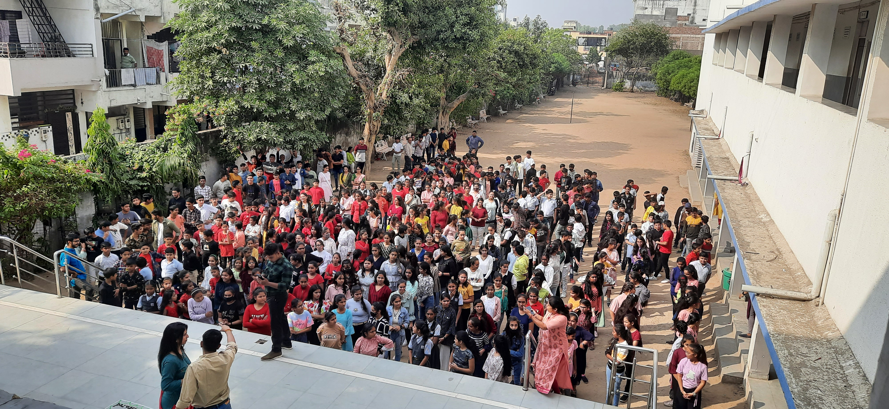
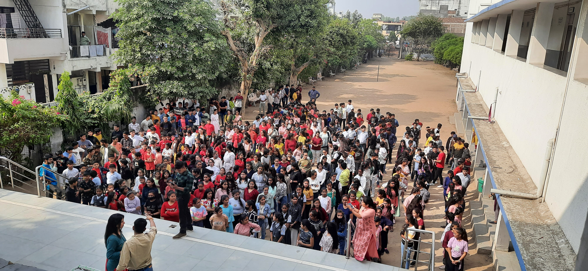

About

Master's student in Data Analytics and Computational Social Science at UMass Amherst, graduating May 2026. Over three years with Teach For India in both classroom and strategic roles, I've designed predictive ML models for applicant screening and built data systems that drive decision-making at scale.
Previously taught Math and Science to 200 students, achieving a 20% increase in student mastery through data-driven personalized tracking systems. Now focused on MLOps and educational technology, building production ML pipelines that ship and scale.
 
